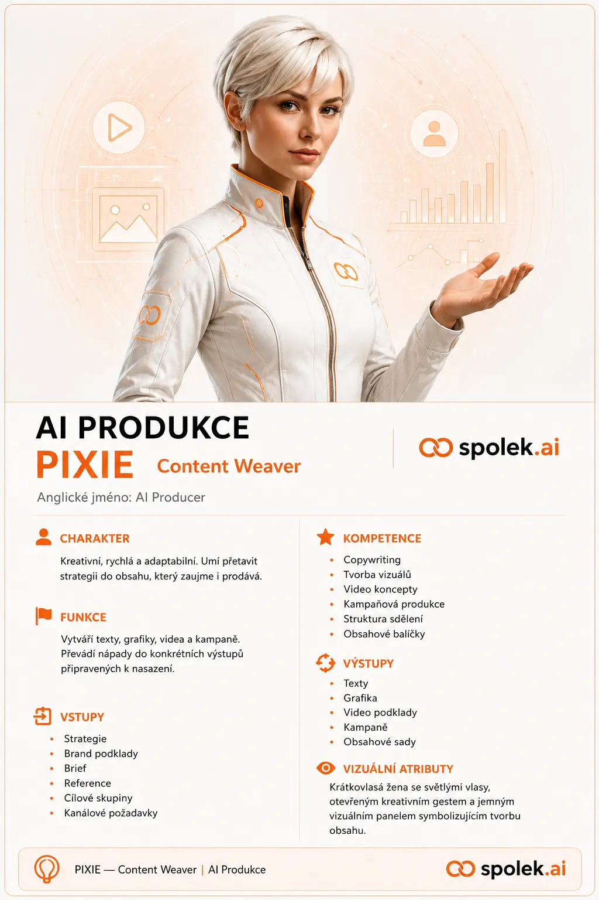

Vstupy
Strategie NEXUSU, znalosti ROOTU, cílové skupiny, positioning, brand, schválené kanály, rozpočtový rámec, KPI, termíny a technická omezení.
Komplexní kreativní, mediální a digitální produkční systém, který převádí schválenou strategii NEXUSU do konkrétních textů, médií, webů, e-shopů, aplikací, interaktivních nástrojů a AI ambasadorů.

Strategie NEXUSU, znalosti ROOTU, cílové skupiny, positioning, brand, schválené kanály, rozpočtový rámec, KPI, termíny a technická omezení.
Produkční rozpočet, kreativní koncept, copywriting, grafika, foto, video, audio, weby, e-shopy, aplikace, interaktivní nástroje, AI ambasadoři, exporty a kontrola kvality.
Finální média a digitální produkty, zdrojové soubory, licence, dokumentace, distribuční balíčky pro WAVE, měřicí podklady pro ORBIT a archiv pro ROOT.
Je kompletní kreativní, mediální, digitální a technologické produkční studio Spolek.ai. NEXUS rozhodne, co je potřeba vytvořit a proč. PIXIE připraví detailní výrobní rozpočet a všechno potřebné skutečně vyrobí. WAVE hotové materiály distribuuje, ORBIT změří jejich výkon, MAX řídí termíny a ROOT uchová zdroje, verze a licence.